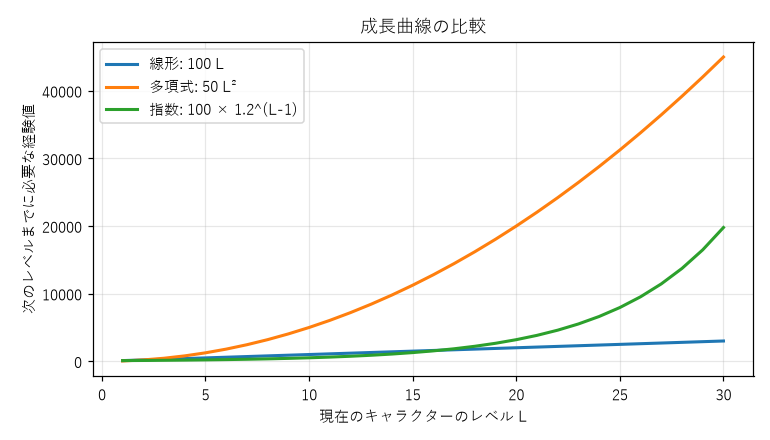
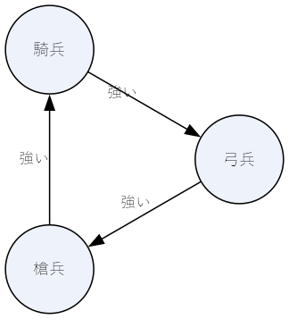
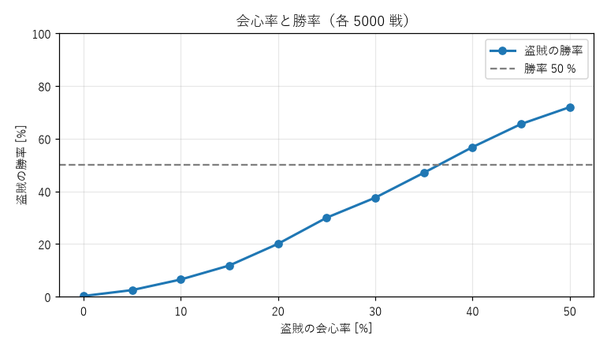

5. ゲームバランス
ゲームバランスとは、ゲームの中の数値や選択肢の強さを調整し、狙った体験が得られる状態にすることである。この章では、成長曲線、コスト、選択肢どうしの相性、確率という 4 つの観点からバランスの考え方を学び、最後にシミュレーションで数値を検証する方法を紹介する。
5.1. バランスの目標
「バランスがよい」と一口に言っても、目指すものは複数ある。
目標 |
内容 |
|---|---|
公平性 |
対戦ゲームで、勝敗がプレイヤーの腕前と判断で決まり、どの陣営やキャラクターを選んだかで決まらない |
選択肢の多様性 |
どの武器、キャラクター、戦略にも使い道があり、1 つの選択肢だけが選ばれ続けることがない |
進行の手応え |
1 人用のゲームで、成長の速さや敵の強さが、プレイヤーに退屈も絶望も感じさせない |
公平性については、ゲームの構造が対称か非対称かで考え方が変わる。将棋やチェスのように両者が同じ駒とルールで戦うゲームは対称であり、先手と後手の差を除けば構造上は公平である。一方、対戦格闘ゲームのキャラクターや、ストラテジーゲームで性能の異なる陣営を選ぶ場合は非対称であり、異なる性能どうしの強さをつり合わせる作業が必要になる。非対称なゲームは調整が難しいが、選択の楽しさや多様な戦い方を生む。
進行の手応えは難易度とも深く関わるため、第 6 章で改めて扱う。
5.2. 成長曲線
RPG では、キャラクターのレベルを上げるのに必要な経験値を式で決めることが多い。式の形によって、成長の手応えは大きく変わる。この節では、キャラクターのレベルを単に「レベル」と書く。現在のレベルを \(L\)、次のレベルまでに必要な経験値を \(E(L)\) として、代表的な 3 つの式を比べる。

図 5.1 成長曲線の比較
線形の式では、必要な経験値が一定の量ずつ増える。多項式の式では増え方がしだいに大きくなる。指数の式では毎回一定の割合（この例では 20 %）ずつ増えるので、序盤はほとんど増えないが、レベルが上がると急激に増える。この例では、レベル 17 で線形の式を追い越し、図の範囲の外のレベル 37 で多項式の式も追い越す。
ただし、成長の手応えを決めるのは必要な経験値そのものではない。プレイヤーが実感するのは「次のレベルまでに何回戦う必要があるか」である。敵 1 体から得られる経験値を \(G(L)\) とすると、次のレベルまでに必要な戦闘の回数 \(N(L)\) は次の式で表せる。
敵の経験値も先へ進むほど増えるので、\(E(L)\) と \(G(L)\) の増え方の比で手応えが決まる。設計するときは、先に「レベル 10 では 5 回、レベル 30 では 15 回の戦闘で次のレベルに上がってほしい」のように \(N(L)\) を決め、そこから逆算して \(E(L)\) と \(G(L)\) を決めると、意図した手応えを作りやすい。
5.3. コストと価値
カードゲームやストラテジーゲームでは、カードやユニットに「使うための費用（コスト）」を設定し、強いものほどコストを高くする。このとき、性能をコストに換算する基準を作っておくと、バランスを保ちやすい。この基準をコストカーブと呼ぶ。
例えば、攻撃力 1 と体力 1 をそれぞれ 1 点とし、コスト 1 につき 2 点分の性能を持たせる、と決める。特殊能力は効果に応じて点数を決める。
カード |
攻撃力 |
体力 |
特殊能力 |
性能の合計 |
コスト |
|---|---|---|---|---|---|
見習い兵士 |
1 |
1 |
なし |
2 点 |
1 |
歩兵 |
2 |
2 |
なし |
4 点 |
2 |
弓兵 |
2 |
1 |
離れた敵を攻撃できる（1 点） |
4 点 |
2 |
騎士 |
4 |
3 |
なし |
7 点 |
3 |
この基準で見ると、騎士はコスト 3 に対して 7 点の性能を持ち、基準の 6 点を 1 点上回っている。こうした基準から外れたものは、ゲームの中で突出して強く（または弱く）なりやすい。基準はあくまで出発点であり、特殊能力の価値はゲームの状況によって変わるので、最終的にはプレイテストで確かめる。しかし基準が無ければ、どのカードが強すぎるのかを議論することもできない。
5.4. 選択肢どうしの相性
5.4.1. 推移的な関係と支配
選択肢 A が B より強く、B が C より強いなら A は C より強い、という関係を推移的な関係と呼ぶ。武器の性能がすべての面で一列に並ぶ場合、一番上の武器を持っていれば他を選ぶ理由が無い。
ある選択肢が、どんな状況でも別の選択肢以上の結果をもたらすとき、前者は後者を支配するという。他のすべての選択肢を支配する選択肢があれば、それを選ぶのが常に最善であり、選択の楽しさは無くなる。このような戦略を支配戦略と呼ぶ。
1 人用の RPG で、物語の進行とともに上位の武器に持ち替えていくのは、推移的な関係を意図的に使った設計である。この場合は、持ち替える瞬間の「強くなった」という手応えが目的であり、問題にはならない。問題になるのは、同時に選べる選択肢の中に支配戦略がある場合である。支配戦略を見つけたら、次のような方法で崩す。
支配している選択肢のコストを上げる。
支配している選択肢に弱点（特定の相手や状況に弱い）を加える。
状況によって有利不利が入れ替わる要素を加える。
5.4.2. 非推移的な関係
じゃんけんのように、A は B に強く、B は C に強く、C は A に強い、という関係を非推移的な関係と呼ぶ。非推移的な関係には支配戦略が無く、相手の出方を読む駆け引きが生まれる。ストラテジーゲームでよく使われる三すくみはその典型である。

図 5.2 兵種の三すくみ
非推移的な関係では、ある選択肢を少し強くしたときの影響が直感に反することがある。じゃんけんで、グーで勝ったときだけ 2 点、それ以外の勝ちは 1 点、負けは勝ちの点数分を失う、というルールに変えたとする。相手がグー、パー、チョキを出す確率をそれぞれ \(r\)、\(p\)、\(s\) とすると、自分が各手を出したときの得点の期待値は次のようになる。
どの手を出しても期待値が同じ（この場合は 0）になるつり合いの状態を求めると、\(r = 1/4\)、\(p = 1/2\)、\(s = 1/4\) となる。グーを強くしたのに、つり合いの状態で最も多く出されるのはパーになり、グーが出される割合はむしろ減る。グーを警戒してパーが増え、パーに勝てるチョキも一定の割合で出されるためである。選択肢の相性が絡むと、個々の性能の調整がどう波及するかは計算やシミュレーションで確かめる必要がある。
5.5. 確率と期待値
多くのゲームは、攻撃の命中、アイテムの出現、カードの配り方などに乱数を使う。乱数を使うときは、期待値と、プレイヤーが感じる確率の両方を考える必要がある。
5.5.1. 期待値で比べる
命中率 \(p_{\text{hit}}\)、ダメージ \(d\)、会心率 \(p_{\text{crit}}\)、会心のダメージ倍率 \(m\) の攻撃が 1 回で与えるダメージの期待値は、次の式で表せる。
例えば、命中率 90 %、ダメージ 10、会心なしの攻撃の期待値は 9 である。命中率 95 %、ダメージ 8、会心率 20 %、倍率 2.5 の攻撃の期待値は \(0.95 \times 8 \times (1 + 0.2 \times 1.5) = 9.88\) となる。期待値を計算すると、見た目の数値が異なる攻撃どうしを同じ物差しで比べられる。
5.5.2. プレイヤーが感じる確率
人は確率を正しく感じ取るのが苦手である。命中率 90 % と表示されると、多くのプレイヤーは「ほぼ必ず当たる」と感じる。しかし、攻撃を何度も繰り返せば外れは必ず起きる。\(n\) 回攻撃して少なくとも 1 回外れる確率は \(1 - 0.9^n\) である。
攻撃の回数 n |
少なくとも 1 回外れる確率 |
2 回連続で外れる場面が少なくとも 1 回ある確率 |
|---|---|---|
5 |
約 41 % |
約 4 % |
10 |
約 65 % |
約 8 % |
30 |
約 96 % |
約 23 % |
1 回の戦闘で 10 回攻撃するゲームなら、3 回に 2 回の戦闘で「90 % なのに外れた」という経験をする。こうした経験が続くと、プレイヤーは「表示された確率はうそだ」と感じ始める。対策として、次のような方法が使われている。
命中率の補正：基準の命中率を表示値より少し低く設定しておき、外れが続くほど次の命中率を上げ、当たったら基準に戻す。長い目で見た命中率は表示値と同じにしたまま、連続した外れを起きにくくできる。
シャッフルバッグ：袋に決まった数の「当たり」と「外れ」を入れ、袋から順に取り出す。袋が空になったら補充する。多くのテトリスでは 7 種類のブロックを 1 組として順番を並べ替えて出すので、あるブロックが長い間来ないという状況は起こらない（同じブロックの間隔は最大でも 12 個）。
乱数を使わない：命中を確実にし、ダメージの幅だけを乱数にするなど、運の影響を小さくする。
乱数はゲームに意外性と緊張感を与えるが、プレイヤーの努力や判断を台無しにすると不公平だと感じさせる。どこに乱数を使い、どこに使わないかは、作りたい体験から逆算して決める。
5.6. シミュレーションで検証する
数値の調整は、期待値の計算だけでは不十分なことが多い。ここでは「戦士」と「盗賊」の 2 体のユニットを例に、モンテカルロ法（乱数を使って多数回の試行を行い、結果を統計的に調べる方法）で勝率を求める。
ユニット |
体力 |
ダメージ |
命中率 |
会心率 |
会心の倍率 |
期待ダメージ |
|---|---|---|---|---|---|---|
戦士 |
100 |
10 |
90 % |
なし |
なし |
9.0 |
盗賊 |
75 |
8 |
95 % |
調整する |
2.5 |
会心率による |
ユニットの性能と攻撃の処理は リスト 5.1、2 体を交互に攻撃させて勝敗を決める処理は リスト 5.2 のとおりである。
21@dataclass(frozen=True)
22class Unit:
23 """戦闘ユニットの能力値。"""
24
25 name: str
26 hp: int
27 damage: int
28 hit_rate: float # 攻撃が当たる確率
29 crit_rate: float = 0.0 # 当たったときに会心になる確率
30 crit_multiplier: float = 1.0 # 会心のときのダメージ倍率
31
32 def expected_damage(self) -> float:
33 """1 回の攻撃で与えるダメージの期待値。"""
34 crit_bonus = self.crit_rate * (self.crit_multiplier - 1.0)
35 return self.hit_rate * self.damage * (1.0 + crit_bonus)
36
37 def attack(self, rng: random.Random) -> int:
38 """1 回攻撃し、与えたダメージを返す。"""
39 if rng.random() >= self.hit_rate:
40 return 0
41 if rng.random() < self.crit_rate:
42 return round(self.damage * self.crit_multiplier)
43 return self.damage
53def battle(first: Unit, second: Unit, rng: random.Random) -> Unit:
54 """2 体を交互に攻撃させ、勝ったほうを返す。"""
55 hp = {first.name: first.hp, second.name: second.hp}
56 attacker, defender = first, second
57 while True:
58 hp[defender.name] -= attacker.attack(rng)
59 if hp[defender.name] <= 0:
60 return attacker
61 attacker, defender = defender, attacker
盗賊の会心率を 0 % から 50 % まで 5 % ずつ変え、それぞれ 5000 回戦わせた結果が次の図である。

図 5.3 盗賊の会心率と勝率
盗賊の期待ダメージが戦士と同じ 9.0 になるのは会心率が約 12 % のときだが、そのときの盗賊の勝率は 10 % 前後にすぎない。盗賊のほうが体力が低いので、期待ダメージが同じなら先に倒れるからである。公平にするには、相手を倒すまでに必要な攻撃の回数をそろえる必要がある。戦士は盗賊を平均 \(75 / 9 \approx 8.3\) 回の攻撃で倒すので、盗賊も戦士を同じくらいの回数で倒せる、つまり期待ダメージが約 12 になる必要がある。これは会心率約 39 % に当たり、図で勝率が 50 % をまたぐ位置とおおむね一致する。
この例のように、単純な期待値の比較だけでは見落としがあり、ユニットどうしの相互作用を含めたシミュレーションで確かめることが大切である。また、シミュレーションは期待値だけでなく、ばらつきも明らかにする。会心に頼る盗賊は、勝ち負けが運に左右されやすい。どちらのユニットを選んだプレイヤーにも納得のいく結果になっているかは、最終的には実際に遊んで確かめる。
5.7. 演習
成長曲線の 3 つの式について、キャラクターのレベル 1 から 30 まで上げるのに必要な経験値の合計をそれぞれ計算せよ。
コストカーブの例で、騎士を基準どおりの性能にするには何を変えればよいか。複数の案を出せ。
じゃんけんで、チョキで勝ったときだけ 3 点にした場合のつり合いの状態（グー、パー、チョキを出す確率）を求めよ。
balance_simulation.pyの盗賊の体力を 85 に変えて実行し、勝率が 50 % になる会心率がどう変わるかを確かめよ。結果を、必要な攻撃の回数の考え方で説明せよ。